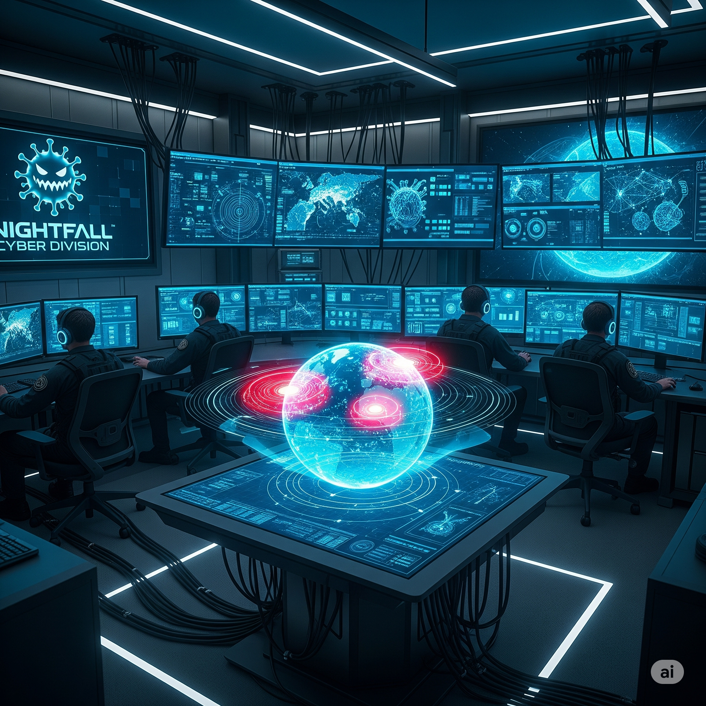

Welcome, CORESEC Technologies' new CISO! Your company, providing critical
infrastructure monitoring to the finance sector, has been targeted by a state-sponsored APT (Advanced
Persistent Threat) group across multiple countries. You face DNS manipulation, physical intrusion, data
encryption, and deepfake disinformation attacks. Your mission: Manage the technical chaos, resist
geopolitical pressures, and lead the company out of this complex crisis!

Simulation Roles
Your Role: CISO (Chief Information Security Officer)
Responsible for managing the crisis in all aspects and making strategic
decisions.
CEO Focused on general reputation, share value, and business
continuity.
CTO (Chief Technology Officer) Technical recovery operations
and system restructuring.
Legal Counsel Legal obligations, regulations (GDPR/KVKK), and
potential lawsuits.
Communications Director Media, press, public opinion, and
internal communication management.
Government Relations Officer Communication with national
agencies and geopolitical stakeholders.
Key Metrics
Operational Continuity Survival rate of critical financial
services. (Start: 100%)
Financial Loss Cost of the crisis to the company (recovery,
fines, loss). (Start: $0)
Cust. & Stakeholder Trust Belief of customers and shareholders
in the company. (Start: 100)
International Reputation Your company's image in the public and
international arena. (Start: 100)